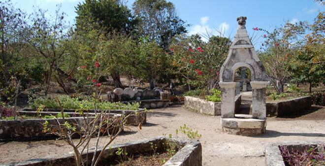
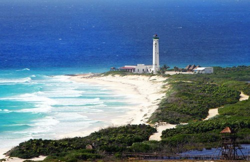
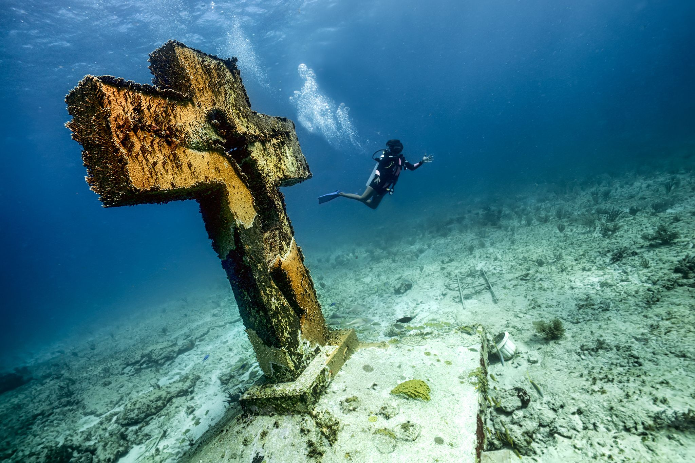
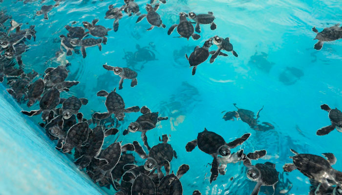
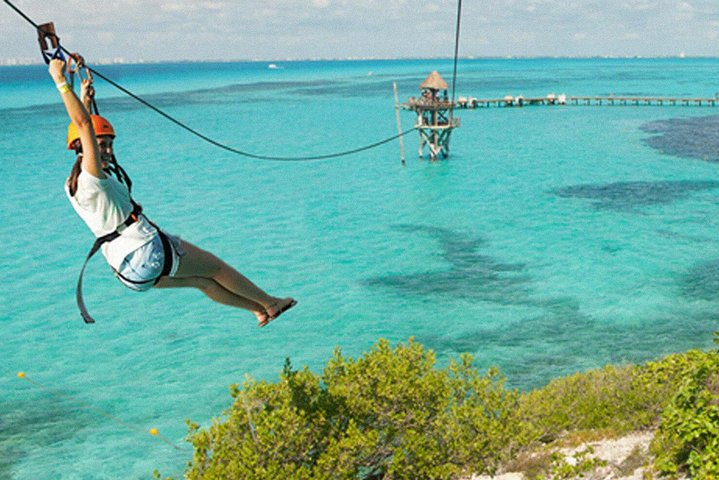
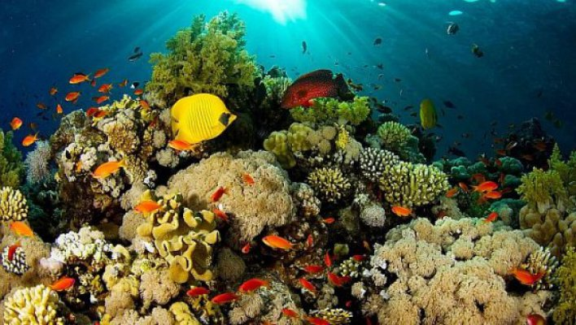
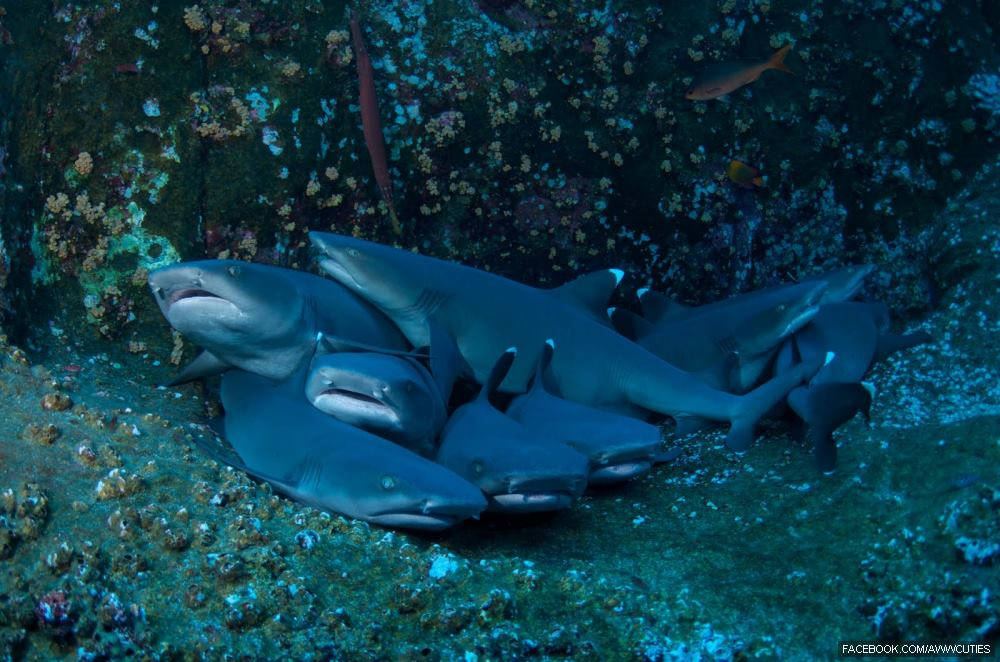
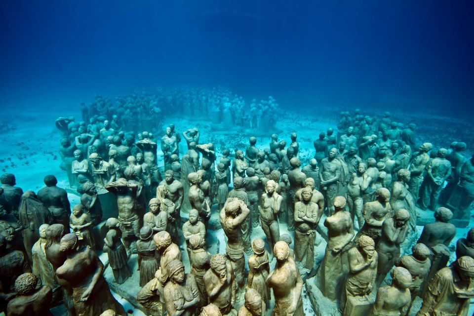

Hacienda Mundaca
Enclavados en el centro geográfico de Isla Mujeres, existen los
vestigios de lo que fue una hacienda agrícola, ganadera conocida hoy,
popularmente, como “La Hacienda del Pirata Mundaca”. Su edificación
data de la segunda mitad del siglo XIX, y es atribuida al español
Fermín Mundaca y Marecheaga, quien aparentemente radicó en la ínsula
en el año de 1858, siendo relacionado en esos años de la Guerra de
Castas con el tráfico de prisioneros mayas a Cuba.

Punta Sur
En este sitio se encuentran vestigios arqueológicos del templo a
Ixchel, la diosa Maya del amor y la fertilidad, así como un Espacio
Escultórico. Punta Sur se encuentra en la zona sur de la Isla, en la
parte más alta de la misma que alcanza los 20 metros sobre el nivel
del mar. Es una formación natural contigua al arrecife Garrafón, que
brinda una vista del mar Caribe, de la isla de Cancún y de la propia
bahía de Isla Mujeres.

Cruz de la Bahía
El día 17 de agosto, como parte de la celebración del año de la
fundación de Isla Mujeres (1857), se colocó una cruz de bronce en el
arrecife manchones. La Cruz de la Bahía mide 3 metros de altura y pesa
cerca de una tonelada. A 12 metros de profundidad se le rinde tributo
y reconocimiento a los hombres y mujeres fallecidos en el mar.

Tortugranja
Isla Mujeres es una zona natural para las tortugas, que llegan a
desovar entre los meses de mayo y septiembre. Por muchos años las
tortugas de mar fueron cazadas por su carne, su caparazón y sus
huevos. Las leyes federales mexicanas ahora las protegen. Los huevos
se colocan en zonas seguras para mantenerlos a salvo de depredadores.
Después de su nacimiento, las tortugas se colocan en estanques y son
acompañadas hasta el mar por los niños de las escuelas locales y los
turistas, que las ayudan a regresar a su hábitat marino.

Parque Garrafón
Garrafón es el parque natural de Isla Mujeres, y debe su nombre a un
arrecife invaluable que, por su mínima profundidad y suave corriente,
permite acercarnos a la vida subacuática del mar Caribe. Se ubica en
la Punta sur de la isla, a 6 km del centro. Cuenta con un majestuoso
arrecife de coral en el que podrá practicar el buceo y el esnórkel,
mientras observa la gran diversidad de especies marinas que ahí
habita.

Arrecife Manchones
Se localiza a 8 km al sur del muelle de Isla Mujeres, muy cerca de la
Punta sur de la isla, en lancha. Cuenta con un banco de coral de 12 km
de largo por 700 m de ancho, en el que se puede bucear.

Cueva de los tiburones dormidos
Se ubica al este de Isla Mujeres. En este lugar, rodeado de
formaciones de coral, se practica el buceo.

Museo Subacuático de Arte (MUSA)
Más de 440 esculturas se encuentran sumergidas en el área de
exhibición de Manchones cerca del sur de Isla Mujeres y 17 esculturas
en el área de Nizuc al sur de Cancún. Todas se encuentran en el parque
nacional Costa Occidental de Isla Mujeres, Punta Cancún y Punta Nizuc,
a fin de reducir el número de visitantes que tienen acceso a los
arrecifes naturales del parque marino. Los fundadores del MUSA son el
director del parque marino, Dr. Jaime González Cano; el escultor
británico Jason deCaires Taylor y su presidente fundador Lic. Roberto
Díaz Abraham. MUSA fue inaugurado el 27 de noviembre de 2010. A fines
de junio de 2012, estarán sumergidas más de 500 esculturas en ambas
salas de exhibición.

Lanzate a ver los "Testimonios"
de la gente que ha disfrutado de estas maravillas con nosotros.
Diversiones infinitas para ti en Isla Mujeres.